바람이 지나가거나, 좋아하는 것이 곁에 있으면 오래 머문다
좋아하는 것들로 둘러싸여 있을 때 가장 나다운 사람
밤의 한강
분수쇼를 보고 친구들과 떡볶이와 맥주를 먹어. 그리고 산책을 하고 바람을 쐬고 노래를 들어
생각이 많을 때, 마음의 짐을 덜어둘 때, 기분 전환이 필요할 때, 바람을 쐬고 싶을 때
편안하고 시원한 느낌을 받을 수 있어서
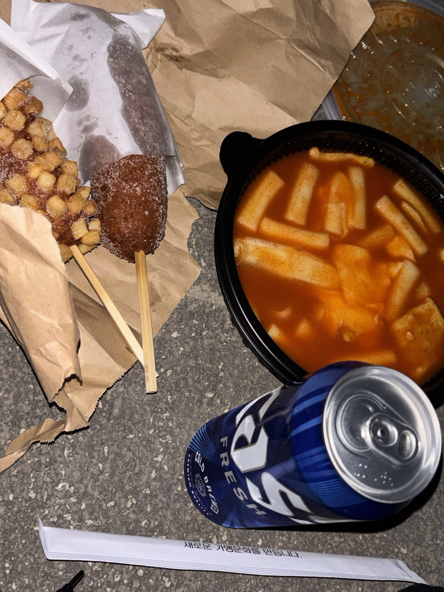
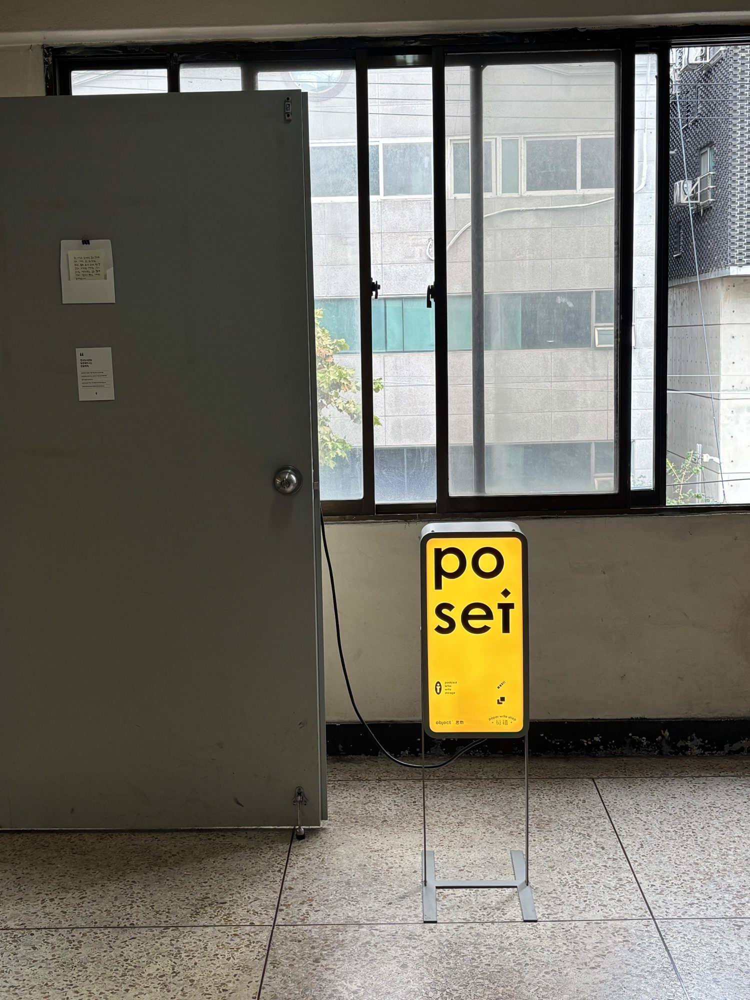
포셋, 연희
엽서와 편지지를 구경하고 구매해
편지를 전하고 싶은 사람이 있을 때
그 사람을 생각하며 편지지를 고르는 시간이 즐거워서

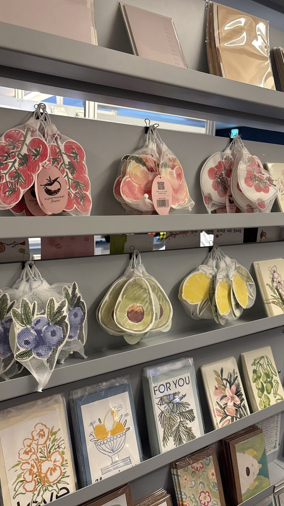

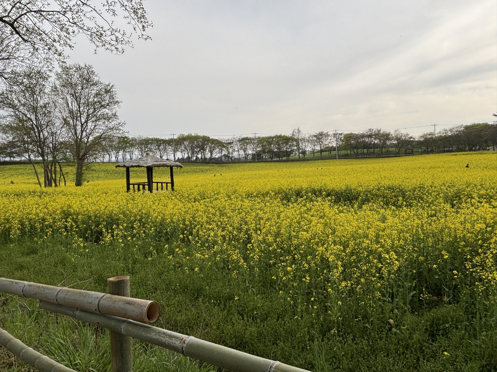
노란 유채꽃밭
꽃을 구경하고 산책해
날씨가 좋을 때
선선한 바람을 맞으며 뻥 뚫린 예쁜 꽃밭을 보는게 좋아서
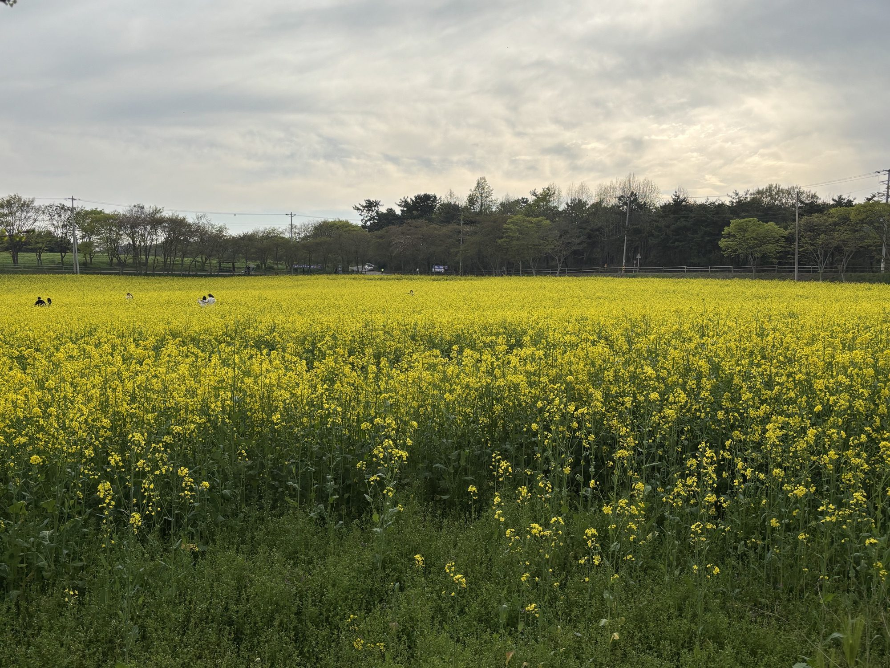
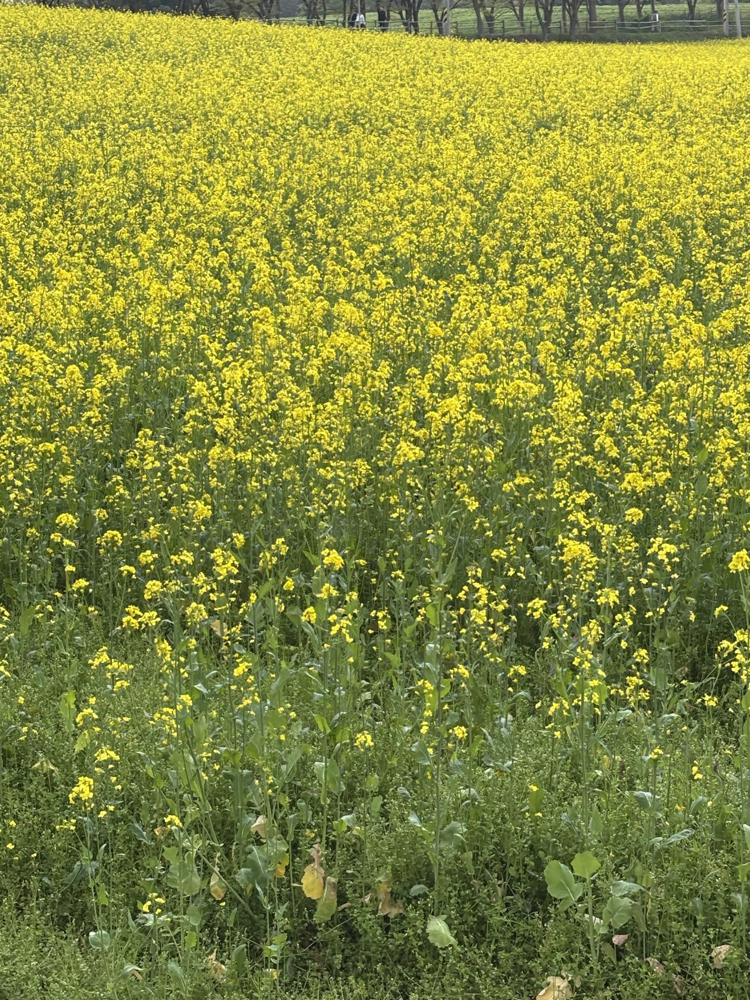
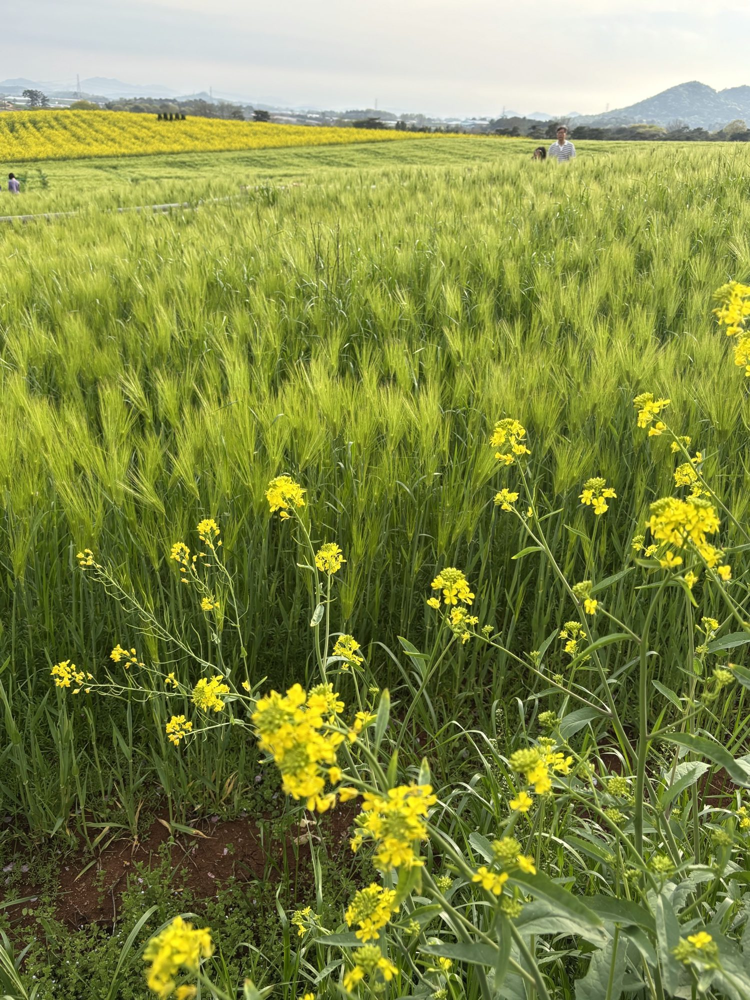
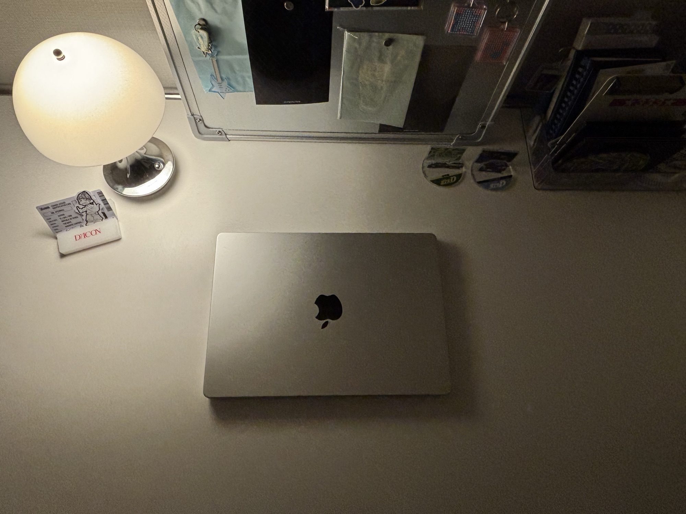
내 책상
음악을 들으며 과제 해
디자인 영감이 떠오를 때
좋아하는 것들로 둘러싸인 공간에서 집중할 수 있어서
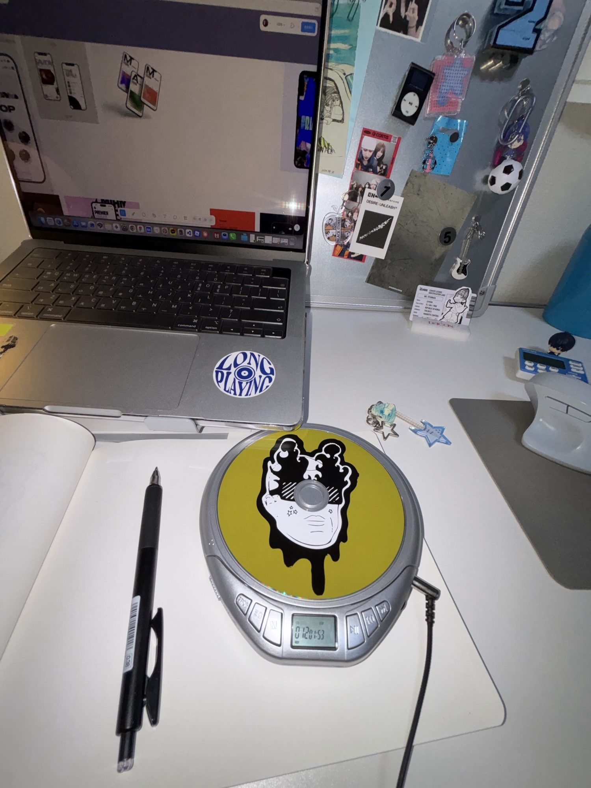
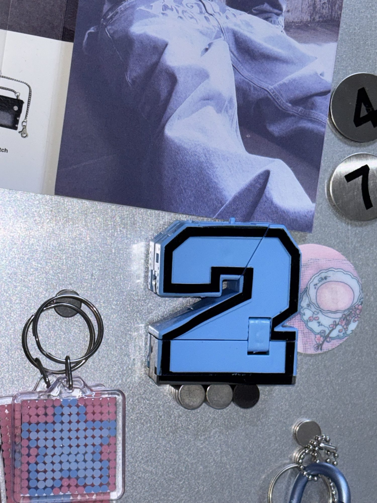

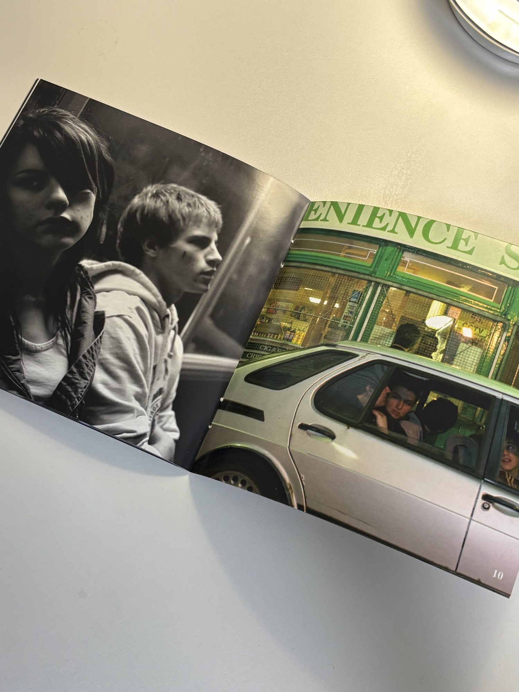